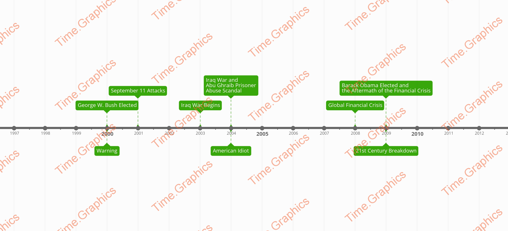

Our Comparison
We have decided to go further and add a comparison of major political events in the world at the time of Green Day's fame and Green Day's album releases to see if there is a direct correclation between Green Day and political change.
How We Did It
We used Time Graphics to create this political timeline comparison by finding out major political events and Green Day's album releases. Because we don't have the paid version, there are watermarks.
The Comparison
Here is the comparison:

Our Takeaway From It
After analysing the timeline, we have found that Green Day's albums have direct correlation with major political events.